01 / Esfuerzo
Acércate al límite, sin perder técnica
Termina la mayoría de las series sintiendo que aún podrías completar unas 1–3 repeticiones limpias. No hace falta llegar al fallo en cada serie.
RIR 1–3Técnica primero
Una guía práctica para entrenar en casa, entender qué trabaja cada ejercicio y progresar con criterio. Sin promesas mágicas: solo principios útiles y evidencia contrastable.
APK de prueba para Android 6 o superior. Descarga directa, fuera de Google Play. Android puede pedir permiso para instalar apps desde el navegador. Mantén Play Protect activado.
El músculo responde a un estímulo de fuerza que se repite y se vuelve gradualmente más exigente. No necesitas máquinas; sí necesitas una forma segura de aumentar el reto.
Termina la mayoría de las series sintiendo que aún podrías completar unas 1–3 repeticiones limpias. No hace falta llegar al fallo en cada serie.
Primero suma repeticiones con buena forma; luego cambia a una variante más difícil, añade una mochila cargada con objetos estables o usa una banda adecuada.
Empieza con 2–3 series por ejercicio y aumenta poco a poco. Como referencia general, la evidencia reciente relaciona más volumen semanal con más hipertrofia, aunque no existe una cifra universal óptima.
Usa un rango cómodo y amplio, baja con control y evita rebotes. Descansa lo suficiente para repetir con calidad: normalmente 1–3 minutos, más si lo necesitas.
Para pecho, hombros y tríceps hay variantes de empuje sin material. La espalda y los bíceps necesitan un movimiento de tracción: una mochila o banda puede ayudar, pero usa solo anclajes realmente seguros.
Flexión inclinada apoyando manos en una superficie firme para empezar; flexión estándar al dominarla; pies elevados solo si mantienes control. Trabaja principalmente pectorales y también tríceps y deltoides anterior.
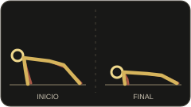
Claves: cuerpo alineado, manos algo más abiertas que hombros, codos en diagonal y pecho hacia el suelo. Ajusta la inclinación para que el final de la serie sea desafiante.
Inclina el torso con espalda neutra, sujeta una mochila bien cerrada y llévala hacia las costillas. El remo carga dorsales, romboides y trapecio medio; la dirección del codo cambia el énfasis, no aísla por completo una zona.
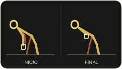
Claves: carga ligera al inicio, abdomen firme y nada de tirones. Si no tienes una carga segura, haz elevaciones boca abajo en “W” y “Y” para trabajar control escapular, sabiendo que ofrecen menos resistencia para hipertrofia.
En cuadrupedia, extiende brazo y pierna contrarios sin girar la pelvis. Entrena control y resistencia del tronco; no sustituye un ejercicio de remo ni es un gran estímulo de masa para la espalda baja.
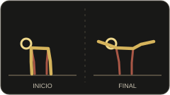
Claves: movimiento lento, columna estable y rango sin molestias. Evita hiperextender la zona lumbar.
Desde una posición de “V” invertida, flexiona los codos llevando la cabeza hacia el suelo. Empieza con manos elevadas o recorrido parcial cómodo; progresa bajando el apoyo o ampliando el recorrido.
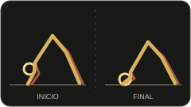
Claves: manos estables, cuello neutro y controla la profundidad. Prioriza otra variante si sientes dolor o presión incómoda en hombro o muñeca.
Sujeta una mochila por sus asas resistentes o una banda de entrenamiento; flexiona el codo sin balancear el torso. Sin resistencia externa, los curls se vuelven pronto demasiado fáciles para seguir progresando.
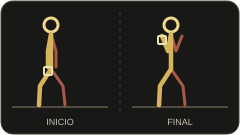
Claves: carga segura y ligera para aprender, codos cerca del cuerpo y bajada controlada. No uses una mesa, puerta o mueble como anclaje improvisado.
Haz una flexión con manos algo más juntas que en la versión estándar, sin obligarte a formar un triángulo. Más énfasis en tríceps, con participación del pecho y el hombro.
Claves: muñecas cómodas, codos siguiendo el torso y tronco firme. Si cuesta, usa la variante inclinada en pared o encimera estable.
La plancha entrena resistencia anti-extensión; dead bug coordina brazos y piernas manteniendo la zona lumbar estable. Son excelentes para control del tronco, pero no reducen grasa localizada.
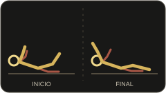
Claves: exhala, mantén costillas y pelvis controladas; detén la serie cuando la postura se pierda.
El peso corporal es un buen punto de partida. Cuando las repeticiones se vuelven demasiado fáciles, progresa a variantes unilaterales o añade carga estable en una mochila.
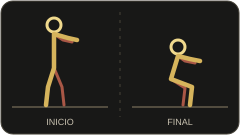
Comienza con sentadilla a una silla estable para calibrar profundidad; después prueba sentadilla libre o zancada dividida. La variante búlgara puede apoyar el pie trasero solo en un soporte bajo y firme.
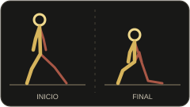
Claves: rodilla acompaña la dirección del pie, pie completo apoyado y rango que controles. Sujétate ligeramente a una pared si necesitas equilibrio.
Empuja el suelo desde los pies y eleva la pelvis contrayendo glúteos. Progresa a versión a una pierna o coloca una mochila bien cerrada sobre la pelvis si puedes hacerlo sin dolor.
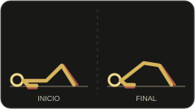
Claves: termina con el tronco alineado, sin arquear la espalda. Para isquiotibiales, una flexión de rodilla deslizante solo sobre una superficie segura y controlada.
Sube y baja los talones en el suelo, con apoyo de una pared para el equilibrio. Progresa a una pierna y añade pausa arriba y estiramiento cómodo abajo.
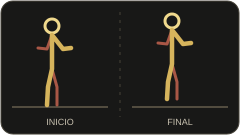
Claves: recorrido completo que no duela y repeticiones sin rebote. Hazlo en suelo plano; no es necesario usar bordes altos.
Sostén una mochila cerca del cuerpo, lleva cadera hacia atrás con rodillas ligeramente flexionadas y vuelve apretando glúteos. Es una alternativa de bisagra ligera, no reemplaza cargas grandes.
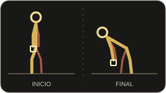
Claves: espalda neutra, carga pegada al cuerpo y rango limitado a lo que mantengas estable.
Deja al menos un día de recuperación entre sesiones al principio. Este ejemplo es una plantilla general; ajusta ejercicios, repeticiones y descanso a tu nivel y equipo.
Flexiones · 3 × 6–15
Remo con mochila · 3 × 8–20
Sentadilla · 3 × 8–15
Dead bug · 2 × 8–12/lado
Pike push-up · 2–3 × 5–12
Curl con carga · 2–3 × 8–20
Puente de glúteo · 3 × 10–20
Pantorrilla · 3 × 10–25
Semana 1: A / B / A
Semana 2: B / A / B
Registra repeticiones y dificultad. Cuando alcances el extremo alto con técnica y te queden más de 3 repeticiones, aumenta un poco el reto.
Elige una versión que te permita ejecutar con control y terminar con esfuerzo real.
Anota variante, series, repeticiones y carga de la mochila. Deja 1–3 repeticiones posibles en la mayoría de series.
Añade alguna repetición, un poco de carga segura o pasa a una variante más difícil, no todo a la vez.
Si el rendimiento cae o aparece dolor, reduce el esfuerzo y revisa técnica y recuperación.
Si tienes una lesión, una condición médica o dolor persistente, consulta con un profesional de salud antes de iniciar o modificar el entrenamiento.
Se priorizan revisiones sistemáticas y metaanálisis, más un ensayo controlado sobre flexiones. Las recomendaciones aquí traducen esos hallazgos; no implican que cada variante casera haya sido probada de forma aislada.
Currier et al. (2026). Overview de 137 revisiones sistemáticas y más de 30.000 participantes; respalda entrenamiento progresivo, ≥2 sesiones semanales y más volumen para hipertrofia, con variación individual.
Leer resumen en PubMed ↗McLeod et al. (2024). Revisión paraguas de 44 revisiones; encuentra que el entrenamiento de resistencia aumenta la masa muscular y que el volumen influye en las adaptaciones.
Leer resumen en PubMed ↗Schoenfeld, Ogborn & Krieger (2017). Revisión sistemática y metaanálisis: observa una relación dosis-respuesta graduada entre volumen semanal y ganancias, sin convertir una cifra única en regla universal.
Leer resumen en PubMed ↗Refalo et al. (2023). Revisión sistemática y metaanálisis: no encuentra evidencia de que el fallo muscular momentáneo sea superior a no llegar al fallo para hipertrofia.
Leer resumen en PubMed ↗Kikuchi & Nakazato (2017). Ensayo pequeño en 18 hombres jóvenes durante 8 semanas: flexiones ajustadas a una carga similar al 40% del 1RM de press produjeron cambios comparables en grosor de pectoral y tríceps. No prueba todas las flexiones ni todos los grupos musculares.
Leer resumen en PubMed ↗Nota de lectura: los estudios investigan poblaciones, programas y condiciones concretas. Usa estas referencias como fundamentos generales, no como garantía de resultados personales ni diagnóstico médico.
Registro local en este dispositivo. Exporta o copia tu respaldo para conservar tus datos.
Registra tu primera sesión y define una meta para empezar.
El registro de sesión es manual; confirma solo cuando hayas terminado.
Rúbrica orientativa, no oficial: puntos de la mejor sesión por músculo = repeticiones totales del día × (1 + carga añadida media en kg ÷ 20). Cada 20 puntos avanza un rango, desde Bronce 1 hasta Diamante 3. Compara la misma variante y registra solo carga externa real.
Cada músculo sube por repeticiones totales de una sesión y carga adicional. Para comparar con justicia, registra la misma variante y movimiento.
Toca una zona del maniquí o elige un músculo de la lista para resaltarlo y ver tu rango. Las zonas son orientativas.
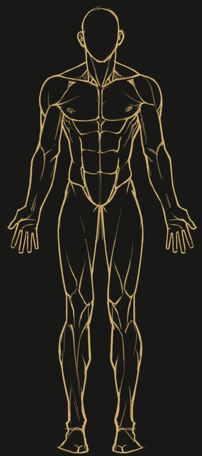
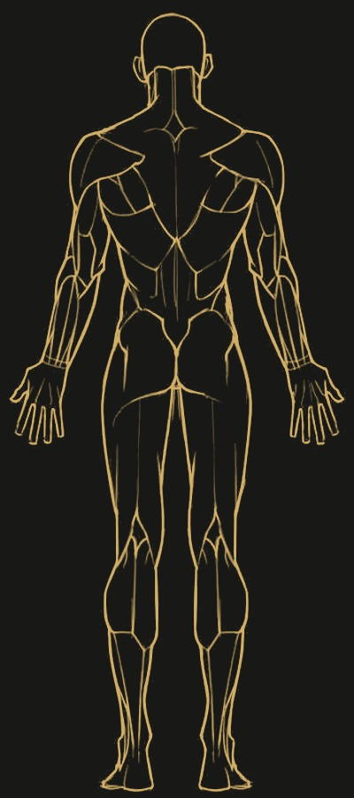
Elige una zona del maniquí para ver el rango de ese músculo.
Marca lo que tienes; las rutinas se adaptan usando solo lo seleccionado.
Genera un plan en el dispositivo usando ejercicios de la guía, tu experiencia, meta general, días y equipo. El peso se guarda como referencia: no determina cargas automáticamente. Es una plantilla por reglas, no un servicio de IA externo ni una recomendación médica.
Sigue siendo opcional descansar o reducir sesiones. Si registras dolor o tienes una lesión, adapta la sesión y consulta un profesional.